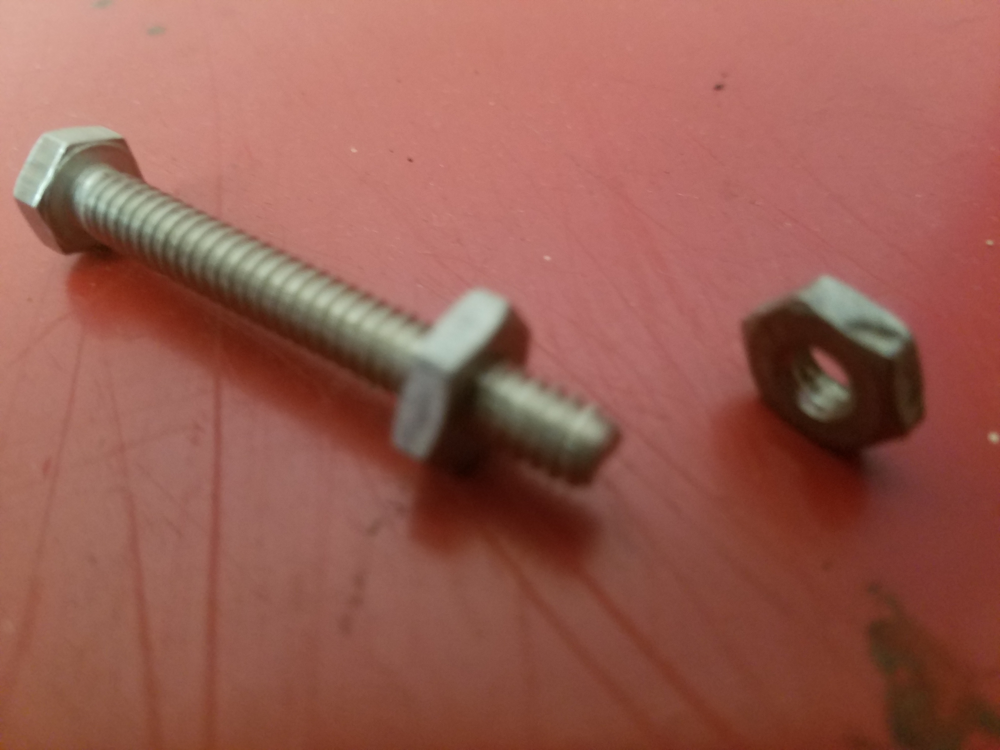
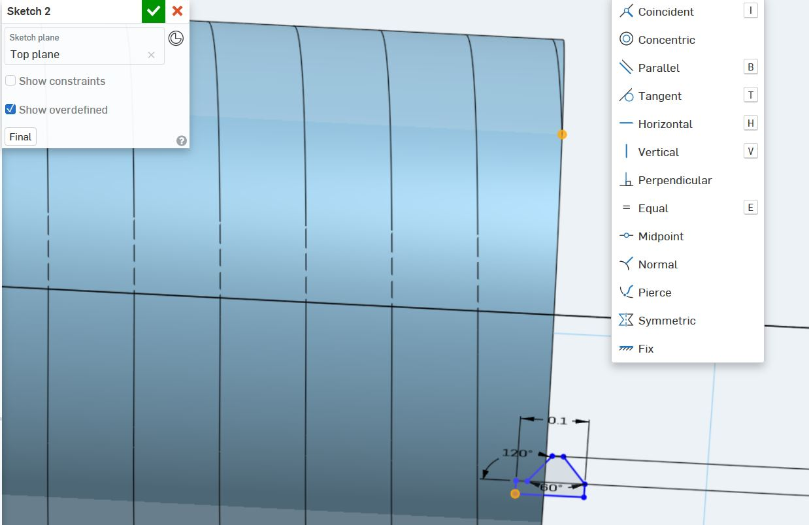

Lukas' Assignment 4: 3D Printed Screw Compartment!
Overview:
Synthesis / Define
Design prompt criteria:Ideation / Develop
Originally I wanted to create a screw and nut.
The goal was to keep it simple, so I found thread dimensions in the "Machinery's Handbook".
While sketching and exploring Onshape I discovered the "Shell" tool which allowed me to create a Compartment inside of the screw.


Test / Implementation / Deliver
After creating the screw with 10 threads per inch in the original sketch and revolve, I realized early on that I would encounter an error in the manufacturing process.
During the early stages of development I created the threads such that they created multiple disconnected threads; rather than one cohesive thread.


Problem:
Solution:
I redesigned the sketch threads such that the thread cut out followed along a helix path in two seperate elements along the feature tree. This required me to learn about the "Pierce" constraint which allowed me to merge a sketch with another feature.

Reflection
Attribution:
Joshua and the Tuesday night Crew (Dhwani Vekaria, Julie Do, Demarcus, and Julie Rose) helped each other out with best practices.
Machine Settings:
Laser

3D Printer
Source files
Click the image below to download the Solidworks and Illustrator files
Assembly 2
Female Thread V5
Male Thread V5